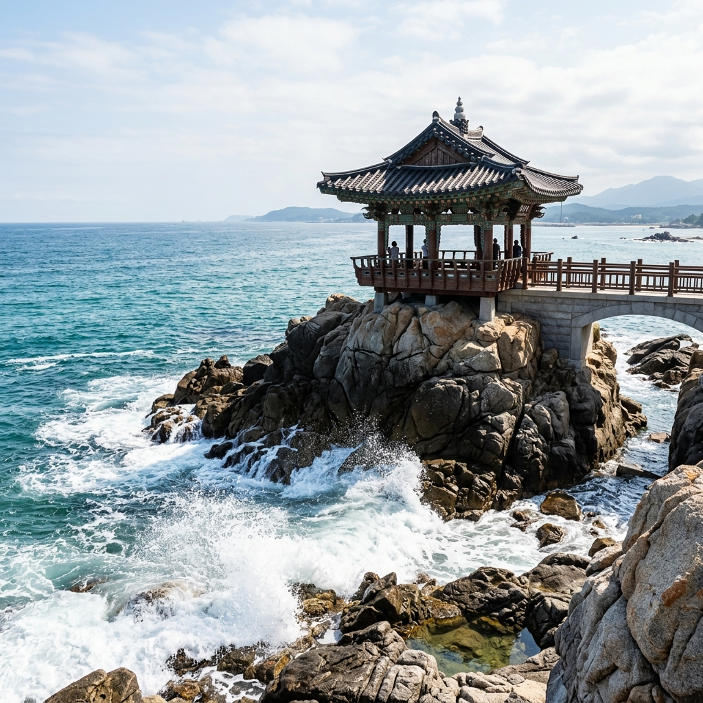
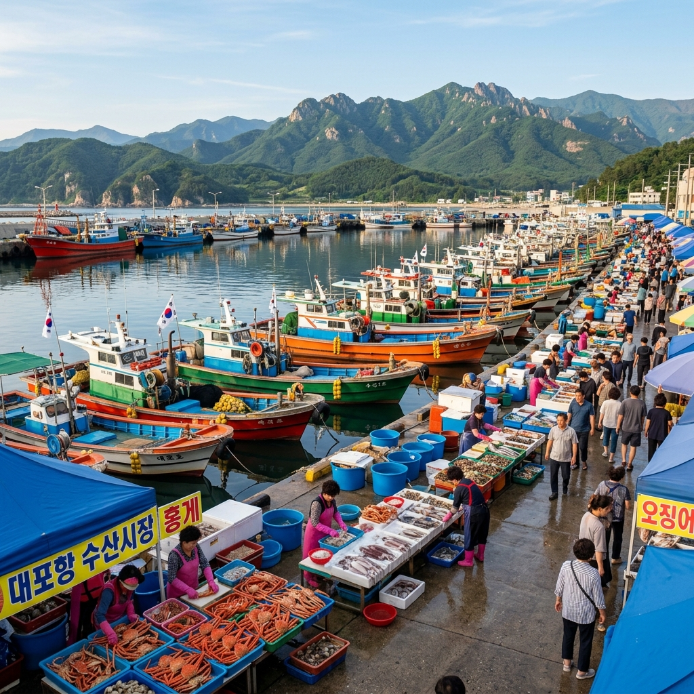
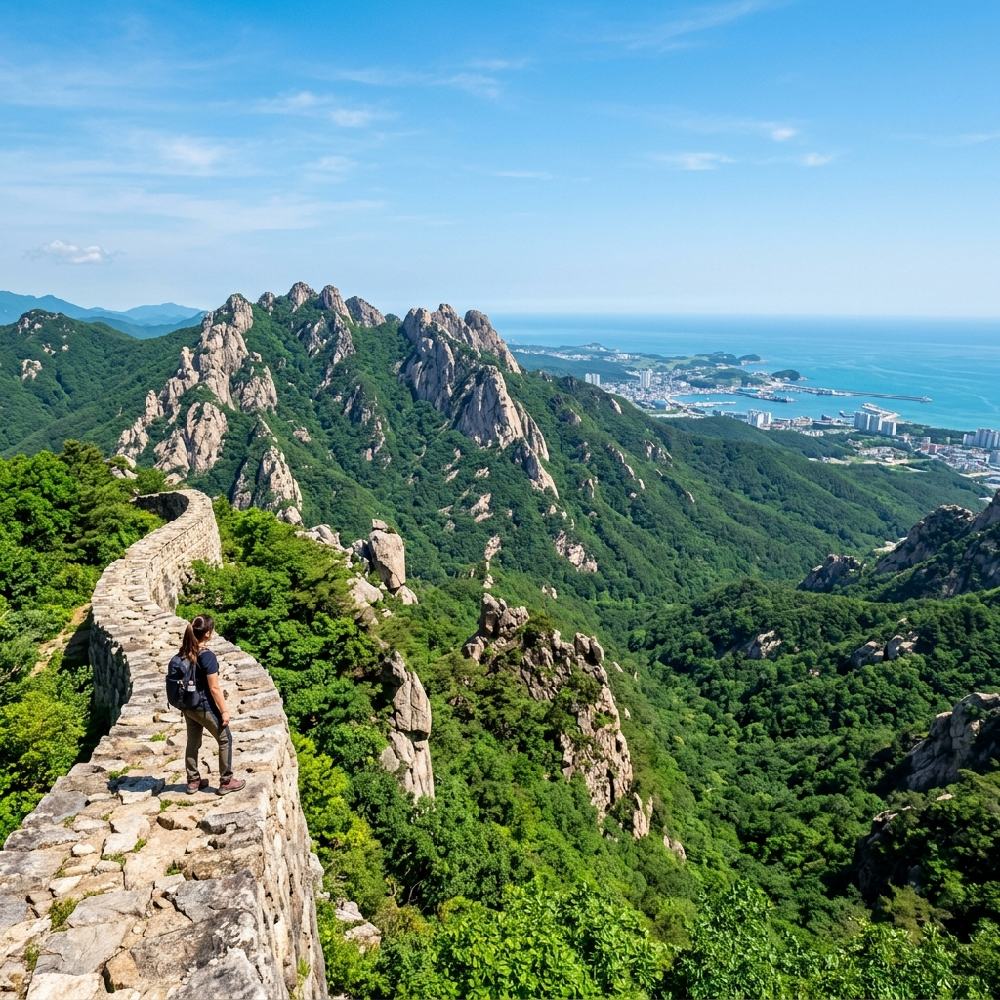

속초 해수욕장이 공식 개장하는 시기는 매년 7월 초입니다.
그전인 6월에는 구조대 배치나 입수 허용이 제한되지만, 그 덕분에 아무도 없는 모래사장에서 파도 소리만 들을 수 있는 특별한 경험이 가능합니다. 성수기 인파가 밀려들기 전의 속초는 여행자보다 현지인 비율이 높아 진짜 속초의 일상을 들여다보는 느낌을 줍니다.
날씨는 25도 내외로 걷기에 쾌적하고, 동해 특유의 맑은 하늘이 이어지는 날이 많습니다. 관광지 대기줄도 짧고 식당도 여유롭습니다. 속초 낭만의 계절이 있다면 6월이 가장 먼저 꼽힐 만합니다.
속초 동명항 근처 해안가 기암절벽 위에 세워진 영금정은 조선 시대부터 이름난 명소입니다.
'영금(靈琴)'은 신령스러운 거문고라는 뜻으로, 파도가 바위틈을 치며 울려 퍼지는 소리가 거문고 현 소리와 같다 하여 붙여진 이름입니다. 파도가 적당히 높은 날 정자 아래 산책로에 서 있으면 파도가 부서지며 내는 깊은 울림이 온몸으로 전해집니다.
동명항 방파제 끝에서 해안 산책로를 따라 걸으면 영금정 정자에 닿습니다. 왕복 약 30분이면 충분하며, 중간중간 파도가 만들어내는 물보라와 해안 절벽의 질감을 가까이서 볼 수 있습니다. 스마트폰만으로도 충분히 아름다운 사진을 담을 수 있는 장소입니다.

영금정은 속초 동해 일출 명소이기도 합니다.
6월 속초 일출 시각은 오전 5시 20~30분경으로, 해가 수평선 위로 솟아오르기 시작하는 순간 영금정의 기암절벽과 정자 실루엣이 황금빛으로 물들어 극적인 장면이 연출됩니다. 일출 30분 전에 도착해 구도를 잡고 기다리는 것이 정석입니다.
파도 촬영을 원한다면 풍속 3m/s 이상의 날을 선택하세요. 바위에 부딪혀 거품을 내뿜는 파도를 장노출로 촬영하면 실크처럼 부드러운 물결 사진이 완성됩니다. 단, 파도가 높은 날에는 바위 위에 올라서는 것이 위험하므로 안전한 산책로에서만 촬영하세요.
속초 남쪽의 대포항은 강원도에서 가장 큰 수산물 직거래 시장이 형성된 어항입니다.
크고 작은 횟집과 포장마차, 수산물 가게가 빼곡히 들어선 이곳은 배에서 갓 내린 신선한 해산물을 바로 구입하거나 현장에서 회로 즐길 수 있는 공간입니다. 6월에는 오징어·가자미·홍게·도다리 등이 풍성하게 잡힙니다.
시장 내에서 직접 해산물을 골라 손질소로 가져가면 바로 회를 쳐 줍니다. 구입한 회는 인근 횟집으로 가져가 상차림(초장·쌈·매운탕)과 함께 즐기는 것이 가장 일반적인 방식입니다. 가격은 당일 선착 물량에 따라 달라지므로 여러 가게를 둘러보고 구입하는 것을 권합니다.

대포항에서 꼭 먹어봐야 할 메뉴는 단연 물회입니다.
오이·상추·깻잎 위에 회를 얹고 새콤달콤한 양념장과 얼음 육수를 부어 만드는 동해식 물회는 시원하고 개운한 맛이 특징입니다. 더워지는 6월 날씨에 한 그릇 들이키면 몸 전체가 시원해지는 느낌입니다.
홍게 찜은 뻘건 껍데기에서 발라내는 달달하고 꽉 찬 살이 매력입니다. 가격은 크기에 따라 다르지만 한 마리에 5~7만 원 수준에서 즐길 수 있습니다. 오징어순대는 오징어 몸통에 찹쌀 등을 채워 삶은 속초 향토 음식으로, 아이들도 좋아하는 간식입니다. 항구 인근 노점에서 쉽게 만날 수 있습니다.
대포항 외에도 속초 시내에 볼거리가 풍부합니다.
청초호는 동해와 맞닿은 석호로 주변 산책로가 잘 정비되어 있습니다. 저녁 산책 코스로 인기 있으며, 맑은 6월에는 호수 너머 설악산 능선이 선명하게 보입니다. 청호동 아바이마을은 한국전쟁 당시 함경도 피난민들이 정착한 마을로, 좁은 수로를 직접 줄을 당겨 건너는 '갯배'가 유명합니다. 오징어순대와 아바이 음식 거리도 이곳에 있습니다.
속초관광수산시장은 닭강정·순대·건어물·만두 등이 가득한 재래시장입니다. 속초 닭강정은 전국적 명성을 가진 간식으로, 방문 전날 전화 예약을 하지 않으면 당일 품절되는 경우가 많습니다.
속초에서 하루를 보내며 여유가 있다면 설악산 권금성 케이블카를 강력 추천합니다.
케이블카를 타고 약 5분이면 해발 601m 권금성 부근에 도달합니다. 정상 전망 공간에서 바라보는 화채봉과 울산바위의 암봉, 그 아래로 펼쳐지는 속초 시내와 동해의 조합은 강원도를 대표하는 조망으로 꼽힙니다.
6월 평일에는 대기 없이 탑승 가능한 날이 많아 편리합니다. 운행 시간과 요금은 설악산 케이블카 공식 홈페이지(sorak.kr)에서 방문 당일 확인하세요. 정상부까지 오르는 계단 탐방까지 더하면 약 2시간이 소요됩니다.

속초해수욕장은 6월에 공식 개장 전이지만 산책은 언제든 가능합니다.
아무도 없는 2km 백사장을 맨발로 거닐며 파도 소리를 들으면 도심 피로가 한꺼번에 해소됩니다. 해변 뒤편 카페에서 음료를 사 들고 모래사장에 앉아 쉬는 것이 6월 속초식 힐링입니다.
영랑호는 속초 시내 북쪽에 있는 석호로, 호수 주변 3km 산책로가 자전거 겸용으로 잘 정비되어 있습니다. 6월 초록빛 버드나무와 수변 갈대가 어우러져 여유로운 산책 코스가 완성됩니다. 속초해변~영랑호~동명항~영금정으로 이어지는 해안·호수 코스는 반나절에 도보로도 소화 가능합니다.
서울에서 속초까지는 동서고속도로(서울양양고속도로) 이용 시 약 2시간이 소요됩니다.
자가용이 없다면 동서울터미널 또는 강남고속버스터미널에서 속초행 버스를 이용하면 됩니다. 약 2시간 30분~3시간 소요됩니다. 속초 시내 주요 관광지는 시내버스와 택시, 공유 킥보드로 이동 가능합니다.
대포항과 영금정 인근에 유료 주차장이 있습니다. 6월 평일에는 주차 공간이 여유롭습니다. 차량 이용자라면 영금정 주차 후 도보로 대포항까지 이동하거나 택시를 활용하는 것이 편리합니다.
마지막으로 속초 여행 전 많은 분들이 궁금해하는 것들을 정리합니다.
Q. 6월에 속초 해수욕장에서 수영이 가능한가요? → 개장 전이므로 입수는 자제가 필요합니다. 해변 산책은 가능합니다.
Q. 대포항 물가가 비싸진 않나요? → 현장 가격판을 꼭 확인하세요. 성수기(7~8월)보다는 합리적이며, 여러 가게를 비교하면 더 좋은 조건을 찾을 수 있습니다.
Q. 속초 닭강정은 미리 예약해야 하나요? → 인기 업체는 사전 전화 예약 또는 현장 주문 후 대기가 필요한 경우가 많습니다. 방문 전날 전화 확인을 권장합니다.